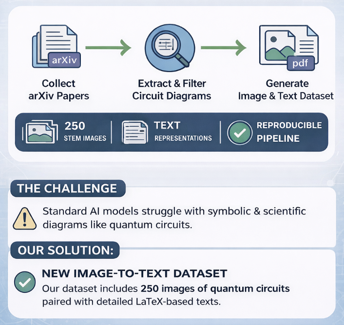
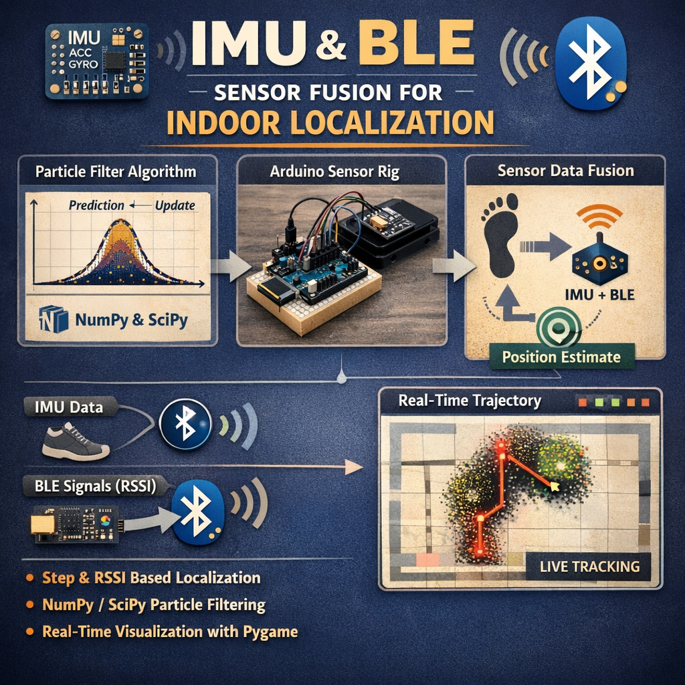
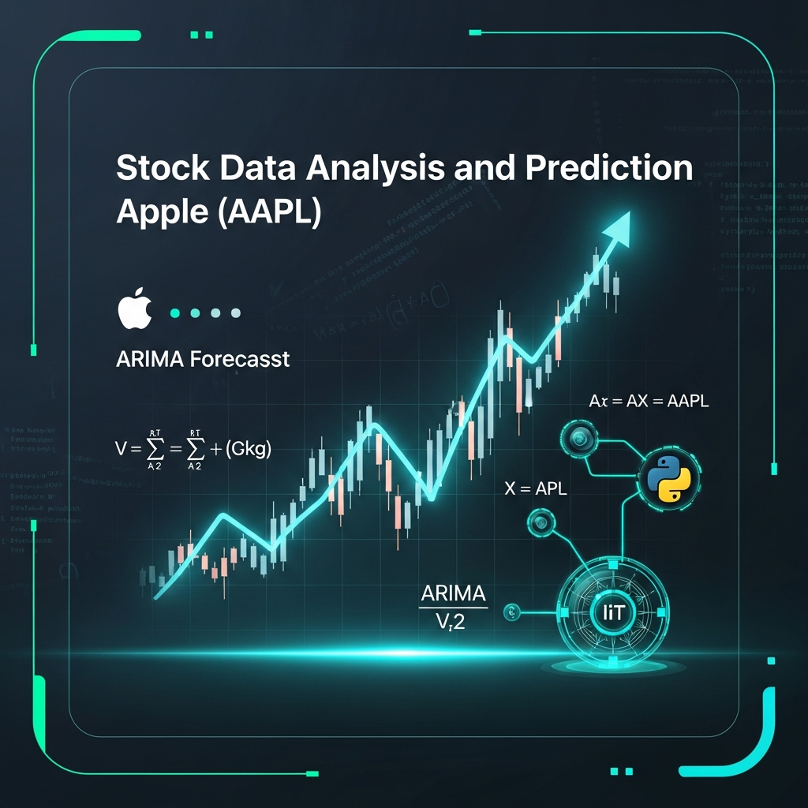

|
Adarsh Koshiya Research Keywords: AI safety; multi-agent systems; AI governance; (multi-agent)reinforcement learning; cooperative AI. Motivation: I am driven by the goal of ensuring that advanced AI systems and their use in real-world settings remain safe, reliable, and aligned with human and organizational needs. To this end, I aim to develop both:
Bio: I am a Master's student in Artificial Intelligence for Industrial Applications at Ostbayerische Technische Hochschule Amberg-Weiden, Germany. I have a strong foundation in Computer Science Engineering with a specialization in Cyber Security from Rashtriya Raksha University, India. I have worked as a Software Engineer at Digion Software, building real-time data pipelines and PCI DSS–compliant monitoring systems, and completed a Developer Internship with Salesforce. I am passionate about applying AI/ML to security, NLP, and data-driven systems. Outside academics, I have been a member of the TCA Club at Rashtriya Raksha University, a volunteer with the National Service Scheme (NSS), and a long-term volunteer at Anurakti Foundation (admitted by Rotary International), supporting education and health awareness among underprivileged children. |

|
Experience |
|
Software Engineer
Jan. 2024 - Sep. 2024
Digion Software |
|
|
Developer Intern
Oct. 2023 - Dec. 2023
Salesforce (Virtual Internship) Advisor: Prof. Vivek Joshi |
Projects |
|
 |
An Image-to-Text Dataset for Quantum Circuit
Diagrams
Adarsh Koshiya Natural Language Processing Project (WiSe2025/26) Code / Poster / Presentation Automated Python pipeline extracting quantum circuit images from arXiv with structured metadata. Multi-stage filtering with LaTeX context analysis and OpenCV; NLP techniques (TF-IDF, sentence segmentation) for text-figure alignment—40% improvement in completeness. |
|
 |
Sensor Fusion for IMU/BLE Indoor Localization
Adarsh Koshiya, Rinkal Embedded Intelligence (SoSe2024/25) Code / Poster / Documentation Developed a prototype indoor localization system in Python by fusing IMU (step/heading) and BLE (RSSI) sensor data. Built the core Particle Filter algorithm using NumPy and SciPy to process motion and measurement models. Collected data from an Arduino-based rig and created a real-time trajectory visualization using Pygame. |

|
Plant Disease Classification with Explainable AI (XAI)
Adarsh Koshiya, Balar AI Project (WiSe2025/26) Code / Documentation / Presentation Built a binary classifier (healthy vs. diseased plant images) using MobileNetV2 and PyTorch with transfer learning and ImageNet pretrained weights. Increased accuracy via fine-tuning, data augmentation, label smoothing, and Adam optimization. Implemented Grad-CAM to visualize model attention and explain predictions in an end-to-end inference pipeline. Deployed on Raspberry Pi with camera capture, inference, and Grad-CAM overlay; outputs transferable for viewing on a connected device. |
|
 |
Stock Data Analysis and Prediction
Adarsh Koshiya, Data Analysis & Visualization (DAV), 2024 Code / Analyzed and visualized Apple (AAPL) stock price data using Python in a Google Colab environment. We performed data manipulation and built advanced visualizations with Pandas, NumPy, Matplotlib, and Seaborn, and developed time-series forecasting models (ARMA, ARIMA) using the statsmodels library. |
Honors & Scholarships |
Courses |
|
Smart Analytics, Machine Learning, and AI on Google Cloud, Google Cloud
Python 3 Programming, Data Collection and Processing with Python, University of Michigan Data Analysis with R Programming, Google Cloud Big Data and ML Fundamentals, Google, Coursera Computer Networks and Network Security, IBM, Coursera IBM Cybersecurity Analyst Professional Certificate, IBM |